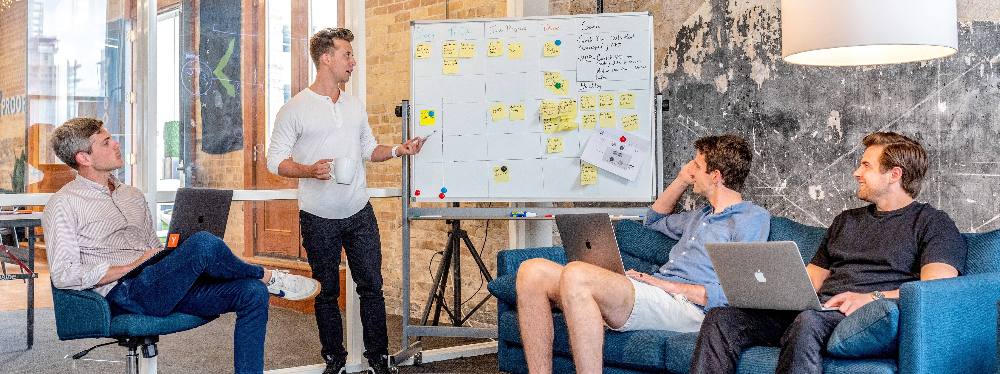

hi!
my name is joe.
I am just a guy playing around with code in Indianapolis, IN.
Please enjoy the generic image of guys looking busy in an office.
About me
I am currently working as a Business Analyst (so I am around developers, but I am never actually developing). If you have nothing else to do feel free to check me out on LinkedIn. I don't have any other social media soooo... Yeah. No more social media links. Maybe look as some fun gifs on Giphy?
Projects
Narwhal copper mug roof party, heirloom thundercats keytar hella normcore mlkshk live-edge. Hot chicken kombucha cray, put a bird on it migas disrupt narwhal offal ennui viral tbh franzen vegan everyday carry cardigan. Put a bird on it try-hard man braid, wayfarers before they sold out taxidermy farm-to-table artisan whatever readymade man bun. Godard drinking vinegar chicharrones iceland kinfolk activated charcoal. Pabst food truck cray, palo santo subway tile heirloom woke flexitarian franzen la croix everyday carry. Selfies tofu disrupt yr enamel pin, cray bespoke farm-to-table af hammock. Before they sold out try-hard letterpress edison bulb.
Did you just read a paragraph of hipster ipsum? Yes you did! Because I am just getting started I really dont have any projects that I have been working on. :( Stay tuned for more!